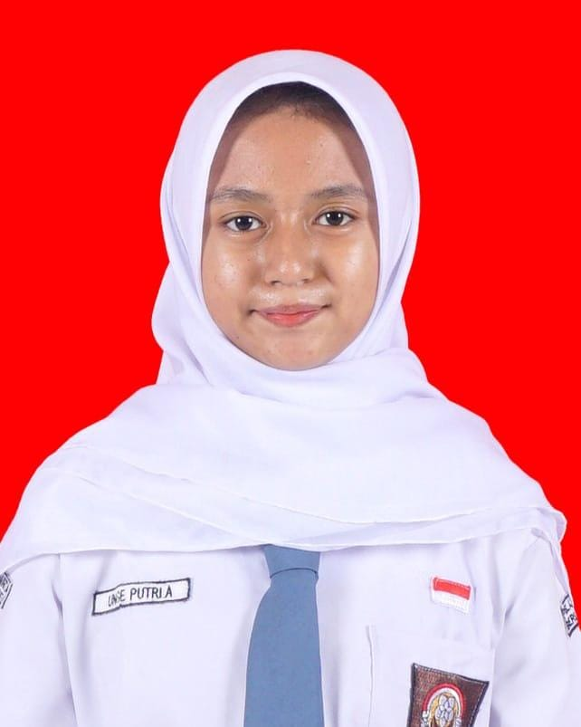

|

|
|
My Social Media Account
|
|
Personal Information
|
| Nama: |
Unge Putri Ayuningtyas |
| Nama Panggilan: |
Unge |
| Tempat, Tanggal Lahir: |
Sleman, 9 Maret 2011 |
| Alamat: |
Jl. Merpati, Dsn. Jaban, Tridadi,
Kec. Sleman, Kab. Sleman, DIY |
| Sekolah: |
SMK Negeri 2 Yogyakarta |
| Kelas: |
X SIJA 2 |
| Jurusan: |
Sistem Informasi Jaringan dan Aplikasi (SIJA) |
|
About Me
|
Hai! Nama saya Unge Putri Ayuningtyas, biasa dipanggil Unge. Saat ini saya bersekolah di SMK Negeri 2 Yogyakarta,
kelas X SIJA 2, jurusan Sistem Informasi, Jaringan, dan Aplikasi (SIJA).
Saya sudah melewati beberapa jenjang pendidikan dan sekarang sedang menjalani masa-masa baru sebagai siswi SMK.
Di sini saya bertemu banyak teman baru, mendapatkan pengalaman baru, dan tentunya menghadapi hal-hal
baru yang sebelumnya belum pernah saya temui.
Alasan saya memilih jurusan SIJA karena saya ingin belajar lebih banyak tentang dunia teknologi, komputer, dan jaringan.
Selain itu, saya juga penasaran bagaimana cara kerja jaringan dan aplikasi yang sering kita gunakan sehari-hari.
Menurut saya, jurusan SIJA menarik karena banyak hal baru yang bisa dipelajari dan pastinya bisa menambah pengalaman serta pengetahuan saya.
|
|